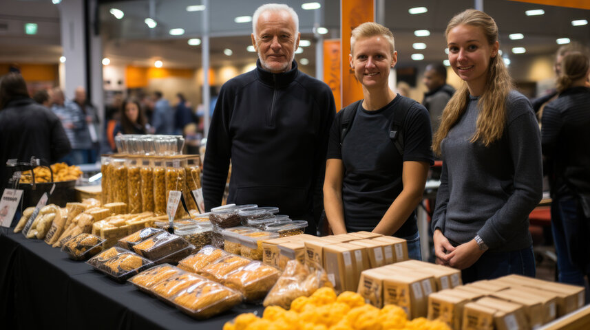

Our founding members were puzzled when they browsed the aisles of grocery stores and found shelves filled with chemical laden and processed food. Even at their low prices, the negative health effects of those products could never make up for the few dollars they cost. Even worse, the so called healthier options were often three times the price, just for consumers to find out they weren't actually so healthy after all.
Feastival was founded in the year of 2020 to advocate for healthy and clean eating that directly partners and sponsors local grocers and caterers ONLY that serve our Bay Area. We strive to bring awareness to only the freshest and healthiest options from your next door neighbors right here at Feastival so you can shop healthily, safely, and without trouble year round.
Feastival happens every year on the beautiful Golden Gate Park grounds right off Geary. We have over 100,000 visitors yearly and are growing with every passing year.
